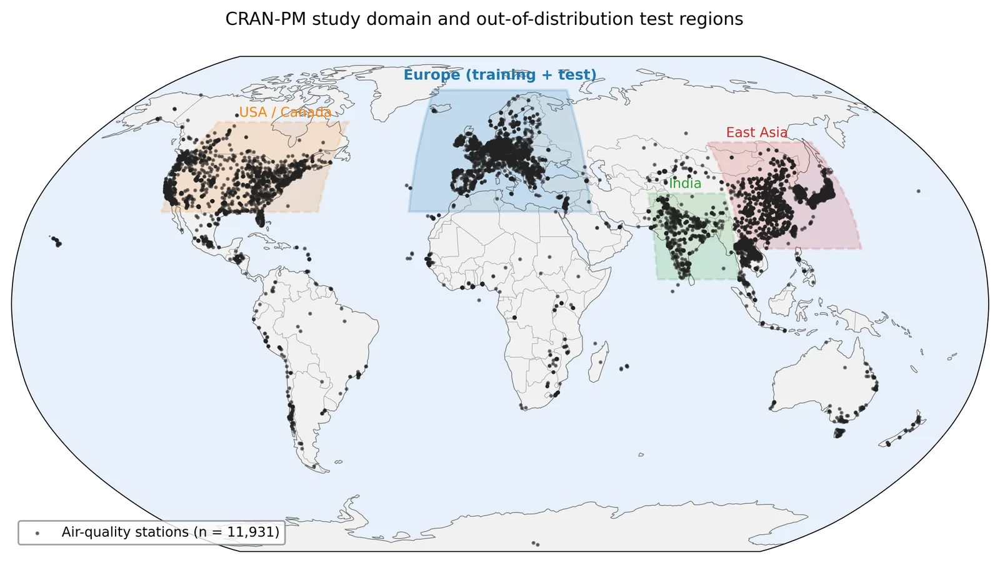
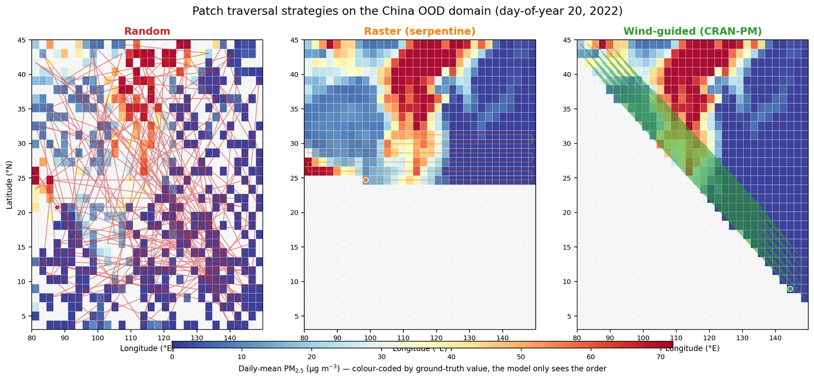
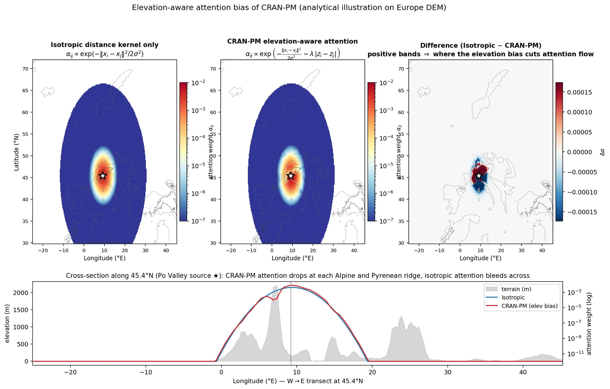
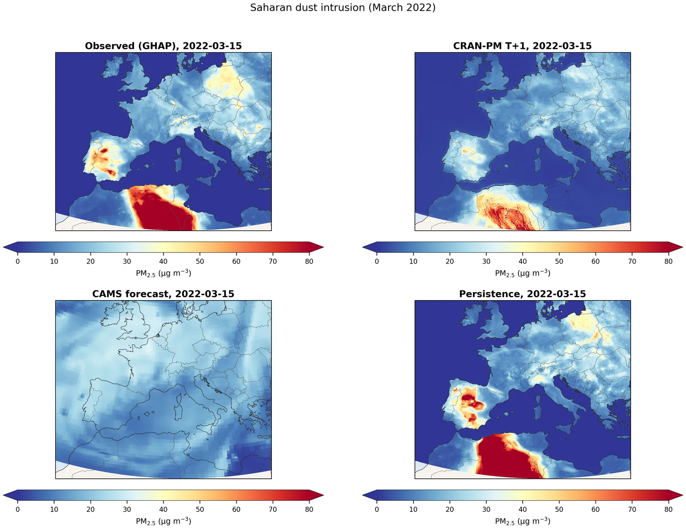

CranPM Studio est la version logicielle open source de CRAN-PM : un Vision Transformer multi-échelle qui transforme, par descente d’échelle, les champs de réanalyse ERA5/CAMS à 25 km en prévisions quotidiennes des PM2.5 à 1 km sur l’Europe, grâce à un pont d’attention entre les résolutions, avec un ordonnancement guidé par le vent et un biais d’attention sensible à l’altitude.
Le modèle atteint une RMSE de 6,85 µg/m³ à J+1, évaluée sur 2 971 stations de mesure de l’AEE (4,7–10,7 % de moins que le meilleur modèle de référence en apprentissage profond), et généralise en zero-shot (sans réentraînement) à 8 régions hors distribution, dont l’Inde, la Chine et les États-Unis.
Au-delà de la précision, le paquet est pensé pour la reproductibilité et l’accessibilité : une API Python et une interface en ligne de commande stables, des procédures d’entraînement et d’inférence, la prise en charge de NVIDIA CUDA comme d’AMD ROCm, des images de conteneur, un dépôt de modèles sur HuggingFace et un démonstrateur web Gradio que chacun peut lancer sans aucune installation.
6,85
RMSE µg/m³
J+1, 2 971 stations de l’AEE
8
Régions en zero-shot
Inde, Chine, États-Unis…
1 km
Résolution
quotidienne, sur toute l’Europe
CUDA
+ROCm
Portabilité GPU
NVIDIA et AMD
Ce que contient le paquet
- API Python et CLI stables. Importez le modèle dans un notebook ou lancez des prévisions en ligne de commande, avec des procédures d’entraînement et d’inférence documentées.
- Deux plateformes GPU. Fonctionne avec NVIDIA CUDA comme avec AMD ROCm : le même code est validé chez les deux constructeurs (y compris l’environnement MI250X de LUMI).
- Images de conteneur. Des environnements reproductibles pour le calcul haute performance et le cloud, sans l’enfer des dépendances.
- Dépôt de modèles sur HuggingFace. Des poids pré-entraînés, hébergés et versionnés, téléchargeables en une ligne.
- Démo Gradio en ligne. Choisissez des coordonnées n’importe où en Europe et une date en 2022 ; le serveur exécute une vraie passe avant de CRAN-PM sur des entrées ERA5/CAMS/GHAP mises en cache et affiche la prévision à 1 km à J+1, évaluée sur les stations de l’AEE. Aucune installation : elle tourne sur HuggingFace Spaces.
Essayer la démo en ligne
Entrez des coordonnées n’importe où en Europe, choisissez une date de l’année de test 2022 et obtenez une vraie prévision des PM2.5 à 1 km pour le lendemain, évaluée sur les stations de mesure. La démo tourne dans le navigateur, sur HuggingFace Spaces (environ 60 s par inférence, offre CPU gratuite).
Figures

Domaines d’entraînement et de transfert zero-shot
Ordre des patchs guidé par le vent (animation)
Attention sensible à l’altitude, vue en coupe Ablations des composantes physiques
Ablations des composantes physiques

Étude de cas : poussières sahariennes Performances GPU : CUDA face à ROCm
Performances GPU : CUDA face à ROCm
Ressources
Site de CranPM Studio Démo en ligne Dépôt GitHub Article CRAN-PM (arXiv) Page du projet CRAN-PM
Crédits
- Premier auteur et mainteneur
- Ammar Kheder (auteur correspondant)
- Auteurs
- A. Kheder, W. Peng, H. Toropainen, Z.-S. Liu, M. Boy
- Affiliations
- LUT University, AMC-Lahti et INAR (Université d’Helsinki)
- Technologies
- PyTorch, double compatibilité CUDA / ROCm, Docker, HuggingFace Hub et Spaces, Gradio
- Statut
- Open source, v1.0 sur GitHub